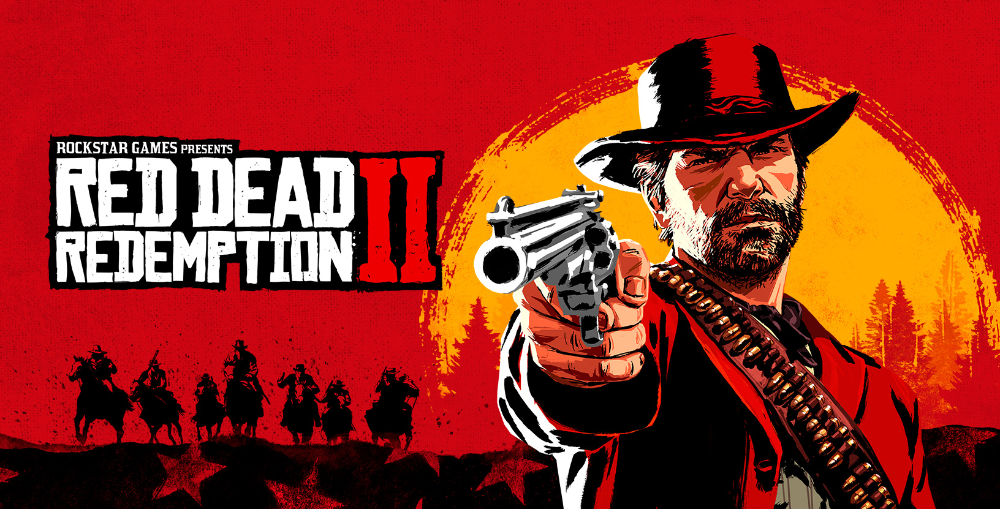

Qual é o nome do cavalo original de Arthur Morgan que morreu antes do início dos eventos do jogo, mencionado por ele em conversas no acampamento?
/RDR2.png)
(A) Silver Dollar
(B) Boadicea
(C) Baylock
(D) The Count

(A) Silver Dollar
(B) Boadicea
(C) Baylock
(D) The Count